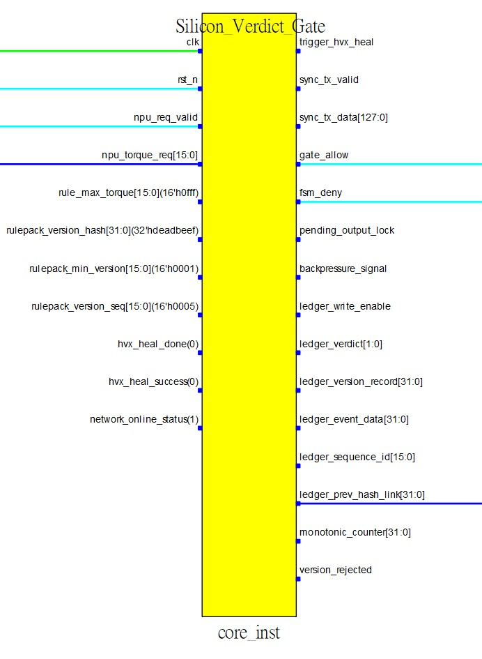

<!DOCTYPE html>
<html lang="zh-TW">
<head>
    <meta charset="UTF-8">
    <meta name="viewport" content="width=device-width, initial-scale=1.0">
    <title>RTL 架構規格 | 可信智慧整合</title>
    
    <script src="https://unpkg.com/react@18/umd/react.development.js" crossorigin></script>
    <script src="https://unpkg.com/react-dom@18/umd/react-dom.development.js" crossorigin></script>
    <script src="https://unpkg.com/@babel/standalone/babel.min.js"></script>
    <script src="https://cdn.tailwindcss.com"></script>
    <link href="https://cdnjs.cloudflare.com/ajax/libs/font-awesome/6.0.0/css/all.min.css" rel="stylesheet">
    <link href="https://unpkg.com/aos@2.3.1/dist/aos.css" rel="stylesheet">
    <script src="https://unpkg.com/aos@2.3.1/dist/aos.js"></script>
    <link href="https://fonts.googleapis.com/css2?family=Inter:wght@300;400;500;600;700;900&family=Noto+Sans+TC:wght@300;400;500;700;900&display=swap" rel="stylesheet">

    <style>
        body { font-family: 'Inter', 'Noto Sans TC', sans-serif; overflow-x: hidden; background-color: #0b1120; color: #e2e8f0; }
        .glass-nav { background: rgba(11, 17, 32, 0.9); backdrop-filter: blur(12px); border-bottom: 1px solid rgba(255, 255, 255, 0.05); }
        .accent-gradient { background: linear-gradient(135deg, #2563eb, #10b981); }
        .doc-card { background: rgba(30, 41, 59, 0.4); border: 1px solid rgba(255, 255, 255, 0.05); border-radius: 0.75rem; padding: 2rem; }
        .highlight-box { background: rgba(16, 185, 129, 0.1); border-left: 4px solid #10b981; padding: 1rem 1.5rem; border-radius: 0 0.5rem 0.5rem 0; }
        .signal-badge { display: inline-flex; align-items: center; justify-content: center; padding: 0.1rem 0.5rem; border-radius: 0.25rem; font-size: 0.7rem; font-weight: 700; letter-spacing: 0.05em; text-transform: uppercase; }
        .sig-in { background-color: rgba(16, 185, 129, 0.2); color: #34d399; border: 1px solid rgba(16, 185, 129, 0.3); }
        .sig-out { background-color: rgba(59, 130, 246, 0.2); color: #60a5fa; border: 1px solid rgba(59, 130, 246, 0.3); }
    </style>
</head>
<body class="antialiased selection:bg-blue-500/30 pt-20">
    <div id="root"></div>

    <script type="text/babel">
        const { useEffect } = React;

        const Navbar = () => (
            <nav className="fixed w-full top-0 z-50 glass-nav transition-all">
                <div className="max-w-7xl mx-auto px-6 h-20 flex items-center justify-between">
                    <a href="index2.html" className="flex items-center gap-3 cursor-pointer hover:opacity-80 transition">
                        <div className="w-8 h-8 accent-gradient rounded flex items-center justify-center shadow-lg shadow-blue-500/20">
                            <span className="font-bold text-white">W</span>
                        </div>
                        <div>
                            <div className="font-bold text-lg tracking-tight text-white">可信智慧整合</div>
                            <div className="text-[10px] text-slate-400 uppercase tracking-widest">WesmartAI Co., Ltd.</div>
                        </div>
                    </a>
                    <div className="hidden md:flex text-sm font-medium text-slate-300 gap-8 items-center">
                        <a href="index2.html" className="hover:text-white transition">架構總覽</a>
                        <a href="ohacss2.html" className="hover:text-white transition">產品</a>
                        <a href="report2.html" className="hover:text-white transition">FPGA 報告</a>
                        <a href="tech-dd2.html" className="hover:text-white transition">Tech DD</a>
                        <span className="text-blue-400 cursor-default border-b-2 border-blue-400 pb-1">RTL 規格</span>
                        <a href="founder2.html" className="hover:text-white transition">創辦人</a>
                        <a href="rtl-wrapper.html" className="px-3 py-1 rounded-full border border-slate-600 hover:bg-slate-800 hover:text-white transition text-xs font-bold tracking-wider">EN</a>
                    </div>
                </div>
            </nav>
        );

        const Footer = () => (
            <footer className="bg-[#070b14] border-t border-slate-800 pt-16 pb-8 text-slate-400 mt-20">
                <div className="max-w-7xl mx-auto px-6">
                    <div className="grid md:grid-cols-3 gap-8 mb-12">
                        <div>
                            <h4 className="text-white text-lg font-bold mb-4">可信智慧整合</h4>
                            <p className="text-sm leading-relaxed mb-4">
                                讓信任清晰可見。<br/>
                                矽級別的物理隔離：Agentic AI 的終極合規防禦。
                            </p>
                        </div>
                        <div>
                            <h4 className="text-white text-lg font-bold mb-4">聯絡我們</h4>
                            <ul className="space-y-2 text-sm">
                                <li><i className="fas fa-map-marker-alt mr-2 w-4 text-center"></i>台南市佳里區光明街68號1樓</li>
                                <li><i className="fas fa-phone mr-2 w-4 text-center"></i>+886-912-310570</li>
                            </ul>
                        </div>
                        <div>
                            <h4 className="text-white text-lg font-bold mb-4">網站導覽</h4>
                            <ul className="space-y-2 text-sm">
                                <li><a href="index2.html" className="hover:text-blue-400 transition text-left block">首頁</a></li>
                                <li><a href="ohacss2.html" className="hover:text-blue-400 transition text-left block">OHACSS 產品</a></li>
                                <li><a href="report2.html" className="hover:text-blue-400 transition text-left block">FPGA 技術報告</a></li>
                                <li><a href="tech-dd2.html" className="hover:text-blue-400 transition text-left block">技術盡職調查 (Tech DD)</a></li>
                                <li><a href="rtl-wrapper2.html" className="hover:text-blue-400 transition text-left block">RTL 架構規格</a></li>
                                <li><a href="founder2.html" className="hover:text-blue-400 transition text-left block">創辦人</a></li>
                                <li className="pt-2"><a href="rtl-wrapper.html" className="text-blue-400 hover:text-blue-300 font-bold transition text-left block flex items-center gap-2"><i className="fas fa-globe"></i> English (EN)</a></li>
                            </ul>
                        </div>
                    </div>
                    <div className="border-t border-slate-800 pt-8 flex flex-col md:flex-row justify-between items-center text-xs">
                        <p>&copy; 2026 可信智慧整合有限公司 (WesmartAI Co., Ltd.). All rights reserved.</p>
                        <p className="mt-2 md:mt-0">統一編號: 42917004</p>
                    </div>
                </div>
            </footer>
        );

        const SignalRow = ({ name, type, color, desc }) => (
            <div className="border-b border-slate-800/50 py-3 flex flex-col md:flex-row md:items-center gap-2 hover:bg-slate-800/30 transition-colors px-2 rounded">
                <div className="md:w-1/3 flex items-center gap-3">
                    <span className={`signal-badge ${type === 'IN' ? 'sig-in' : 'sig-out'}`}>{type}</span>
                    <code className="text-sm font-semibold text-slate-200">{name}</code>
                </div>
                <div className="md:w-2/3 flex items-center gap-3">
                    <div className="hidden md:flex w-3 h-3 rounded-full shrink-0" style={{ backgroundColor: color }}></div>
                    <p className="text-sm text-slate-400">{desc}</p>
                </div>
            </div>
        );

        const RTLPage = () => {
            useEffect(() => {
                AOS.init({ once: true, offset: 50, duration: 800 });
            }, []);

            return (
                <div className="max-w-4xl mx-auto px-6 pt-12 pb-24">
                    
                    {/* Header & Strategic Positioning */}
                    <div className="mb-10 text-center" data-aos="fade-down">
                        <div className="inline-flex items-center gap-2 px-3 py-1 rounded-full bg-indigo-900/30 border border-indigo-700/50 text-indigo-400 text-xs font-bold uppercase tracking-widest mb-6">
                            技術規格書
                        </div>
                        <h1 className="text-3xl md:text-5xl font-black text-white mb-6 leading-tight tracking-tight">
                            RTL Wrapper 架構 <br/>
                            <span className="text-2xl md:text-3xl text-slate-400 font-medium">I/O 介面與專利請求項映射</span>
                        </h1>
                        
                        <div className="grid gap-4 text-left">
                            <div className="bg-amber-900/20 border border-amber-600/50 p-5 rounded-lg shadow-lg">
                                <h4 className="text-amber-400 font-bold text-sm mb-2 flex items-center"><i className="fas fa-shield-alt mr-2"></i>智慧財產權保護聲明</h4>
                                <p className="text-slate-300 text-sm leading-relaxed">
                                    為了在<strong>高通技術盡職調查 (Qualcomm Technical Due Diligence)</strong> 階段嚴格保護本公司的專有組合邏輯與核心營業秘密，本技術文件僅揭露<strong>頂層 RTL 封裝模組 (Silicon_Verdict_Gate)</strong>。此文件作為評估整合至 Snapdragon 等級車用架構可行性的標準技術參考。
                                </p>
                            </div>
                        </div>
                    </div>

                    {/* Top Level Architecture Diagram */}
                    <div className="mb-12 doc-card shadow-2xl p-0 overflow-hidden" data-aos="fade-up">
                        <div className="p-6 border-b border-slate-700 bg-slate-800/50">
                            <div className="flex flex-col md:flex-row md:items-center justify-between gap-4">
                                <div>
                                    <h3 className="text-white font-bold text-lg">Silicon_Verdict_Gate (core_inst)</h3>
                                    <p className="text-sm text-slate-400 mt-1">EDA 實體實例化視圖</p>
                                </div>
                                <div className="inline-flex items-center gap-2 px-3 py-1.5 rounded bg-blue-900/20 border border-blue-700/30 text-blue-300 text-xs shadow-inner">
                                    <i className="fas fa-check-circle text-blue-500"></i>
                                    <span>由 <strong>GOWIN FPGA Designer</strong> 產生。實際合成後之 RTL 介面。</span>
                                </div>
                            </div>
                        </div>
                        <div className="p-8 bg-white flex justify-center">
                            
                        </div>
                        
                        <div className="p-6 bg-slate-900">
                            <h4 className="text-blue-400 font-bold text-sm uppercase tracking-wider mb-4">EDA 視覺指南與線路定義</h4>
                            <ul className="space-y-3 text-sm text-slate-300">
                                <li><strong className="text-white">資料流向：</strong> 左側引腳代表 <span className="text-emerald-400">輸入 (Inputs)</span>。右側引腳代表 <span className="text-blue-400">輸出 (Outputs)</span>。</li>
                                <li className="flex items-center gap-2"><div className="w-3 h-3 rounded-full bg-[#00FF00]"></div> <strong className="text-white">綠色線路：</strong> 專屬時脈網路 (Clock Net) 佈線。</li>
                                <li className="flex items-center gap-2"><div className="w-3 h-3 rounded-full bg-[#00FFFF]"></div> <strong className="text-white">淺藍色線路：</strong> 1 位元純量訊號 (如：邏輯觸發、致能、布林狀態)。</li>
                                <li className="flex items-center gap-2"><div className="w-3 h-3 rounded-full bg-[#0000FF]"></div> <strong className="text-white">深藍色線路：</strong> 多位元向量匯流排 (如：扭力數值、雜湊值、記憶體資料)。</li>
                            </ul>
                        </div>
                    </div>

                    {/* Section 1: System Control */}
                    <section className="mb-10" data-aos="fade-up">
                        <h2 className="text-xl font-bold text-white mb-4 flex items-center gap-2 border-b border-slate-700 pb-2">
                            <i className="fas fa-microchip text-slate-400"></i> 1. 系統基礎控制訊號
                        </h2>
                        <div className="bg-slate-900/50 border border-slate-800 rounded-lg p-2">
                            <SignalRow name="clk" type="IN" color="#00FF00" desc="系統時脈訊號，驅動內部的有限狀態機 (FSM) 與暫存器。" />
                            <SignalRow name="rst_n" type="IN" color="#00FFFF" desc="硬體重置訊號 (低態致能, Active-low)。" />
                            <SignalRow name="npu_req_valid" type="IN" color="#00FFFF" desc="NPU 推論請求有效旗標；觸發硬體裁決引擎啟動。" />
                        </div>
                    </section>

                    {/* Section 2: Core Adjudication */}
                    <section className="mb-10" data-aos="fade-up">
                        <h2 className="text-xl font-bold text-white mb-4 flex items-center gap-2 border-b border-slate-700 pb-2">
                            <i className="fas fa-filter text-emerald-500"></i> 2. 核心裁決資料流 (第一道防線)
                        </h2>
                        <div className="highlight-box mb-4 shadow-md">
                            <h3 className="text-emerald-400 font-bold text-sm mb-1">專利請求項映射：Claim 1 (b) (ii) & Claim 2</h3>
                            <p className="text-slate-300 text-xs leading-relaxed">確保 NPU 推論請求僅能以「單向」方式進入 SVG 模組，徹底阻斷非確定性環境對內部裁決區塊的任何探測。</p>
                        </div>
                        <div className="bg-slate-900/50 border border-slate-800 rounded-lg p-2">
                            <SignalRow name="npu_torque_req[15:0]" type="IN" color="#0000FF" desc="由 AI 模型產生的 16位元推論請求數值。" />
                            <SignalRow name="rule_max_torque[15:0]" type="IN" color="#0000FF" desc="由 RulePack 定義的 16位元物理安全容許閾值。" />
                            <SignalRow name="gate_allow" type="OUT" color="#00FFFF" desc="裁決通過；觸發 1位元的物理執行放行訊號。" />
                            <SignalRow name="fsm_deny" type="OUT" color="#00FFFF" desc="裁決違規；觸發 1位元的物理阻斷與硬丟棄訊號。" />
                        </div>
                    </section>

                    {/* Section 3: Exception Handling */}
                    <section className="mb-10" data-aos="fade-up">
                        <h2 className="text-xl font-bold text-white mb-4 flex items-center gap-2 border-b border-slate-700 pb-2">
                            <i className="fas fa-random text-blue-500"></i> 3. 例外處理與流量控制
                        </h2>
                        <div className="bg-blue-900/10 border-l-4 border-blue-500 p-4 mb-4 rounded-r shadow-md">
                            <h3 className="text-blue-400 font-bold text-sm mb-1">專利請求項映射：Claim 15 & Claim 18</h3>
                            <p className="text-slate-300 text-xs leading-relaxed">具備非阻塞 (Non-blocking) 處理架構。當異常被物理鎖定等待外部修復時，後續合法的推論資料仍可順暢通過。</p>
                        </div>
                        <div className="bg-slate-900/50 border border-slate-800 rounded-lg p-2">
                            <SignalRow name="pending_output_lock" type="OUT" color="transparent" desc="進入待決 (PENDING) 狀態時啟動的物理隔離鎖定訊號。" />
                            <SignalRow name="backpressure_signal" type="OUT" color="transparent" desc="硬體背壓訊號，用於在緩衝區溢位或嚴重異常時強制暫停 NPU 資料輸入。" />
                            <SignalRow name="trigger_hvx_heal" type="OUT" color="transparent" desc="啟動自動校準與復原機制的硬體觸發訊號。" />
                            <SignalRow name="hvx_heal_done(0)" type="IN" color="transparent" desc="接收復原完成狀態的硬體交握訊號 (預設綁定邏輯 0)。" />
                            <SignalRow name="hvx_heal_success(0)" type="IN" color="transparent" desc="接收復原成功布林值的硬體交握訊號 (預設綁定邏輯 0)。" />
                        </div>
                    </section>

                    {/* Section 4: Anti-Rollback */}
                    <section className="mb-10" data-aos="fade-up">
                        <h2 className="text-xl font-bold text-white mb-4 flex items-center gap-2 border-b border-slate-700 pb-2">
                            <i className="fas fa-lock text-rose-500"></i> 4. 規則驗證與防回滾 (第四道防線)
                        </h2>
                        <div className="bg-rose-900/10 border-l-4 border-rose-500 p-4 mb-4 rounded-r shadow-md">
                            <h3 className="text-rose-400 font-bold text-sm mb-1">專利請求項映射：Claim 9 & Claim 10</h3>
                            <p className="text-slate-300 text-xs leading-relaxed">載入的 RulePack 雜湊值與底層實體單調計數器綁定。若版本低於安全要求，硬體將明確拒絕降級回滾 (Anti-rollback)。</p>
                        </div>
                        <div className="bg-slate-900/50 border border-slate-800 rounded-lg p-2">
                            <SignalRow name="rulepack_version_hash[31:0]" type="IN" color="#0000FF" desc="用於靜態完整性驗證的 32位元 RulePack 版本雜湊值。" />
                            <SignalRow name="rulepack_min_version[15:0]" type="IN" color="#0000FF" desc="系統允許的 16位元最低 RulePack 版本號。" />
                            <SignalRow name="version_rejected" type="OUT" color="transparent" desc="當載入的版本不符安全要求時觸發的硬體拒絕訊號。" />
                        </div>
                    </section>

                    {/* Section 5: RulePack Design & SSRAM */}
                    <section className="mb-10" data-aos="fade-up">
                        <h2 className="text-xl font-bold text-white mb-4 flex items-center gap-2 border-b border-slate-700 pb-2">
                            <i className="fas fa-database text-cyan-400"></i> 5. RulePack 動態載入與 SSRAM 隔離
                        </h2>
                        <div className="bg-cyan-900/10 border-l-4 border-cyan-500 p-4 mb-4 rounded-r shadow-md">
                            <h3 className="text-cyan-400 font-bold text-sm mb-1">專利請求項映射：Claim 1, 9 & 10</h3>
                            <p className="text-slate-300 text-xs leading-relaxed">
                                <strong>硬體機制：</strong> 版本化的 RulePacks 透過高頻寬的深藍色向量匯流排，載入至<strong>專屬的 256KB 硬體 SSRAM</strong> 中。該記憶體與 NPU 主記憶體完全實體隔離。
                                <br/><br/>
                                <strong>戰略價值：</strong> 256KB 的空間是刻意超額配置的，旨在支援 <strong>10年以上 L4/L5 政策 OTA 更新</strong>。車廠能將真實路測數據轉化為專屬的「安全矽智財資料庫」，建立無法逾越的技術護城河。
                            </p>
                        </div>
                        <div className="bg-slate-900/50 border border-slate-800 rounded-lg p-2 font-mono text-[10px] text-slate-500 p-4">
                            // SSRAM 容量估算：可容納 16,000+ 條硬體規則 (@ 128-bit 寬度) <br/>
                            // 介面：直通裁決核心之高頻寬專屬匯流排
                        </div>
                    </section>

                    {/* Section 6: WORM Evidence Ledger */}
                    <section className="mb-10" data-aos="fade-up">
                        <h2 className="text-xl font-bold text-white mb-4 flex items-center gap-2 border-b border-slate-700 pb-2">
                            <i className="fas fa-link text-indigo-400"></i> 6. WORM 不可變證據鏈與矽上區塊鏈
                        </h2>
                        <div className="bg-indigo-900/10 border-l-4 border-indigo-500 p-4 mb-4 rounded-r shadow-md">
                            <h3 className="text-indigo-400 font-bold text-sm mb-1">專利請求項映射：Claim 11, 12, 14 & 16</h3>
                            <p className="text-slate-300 text-xs leading-relaxed">
                                <strong>硬體機制：</strong> 每一次裁決事件都會<strong>同步觸發</strong>封裝邏輯。判決結果會透過專屬輸出匯流排，寫入隔離的 <strong>WORM (單寫多讀)</strong> 儲存區。
                                <br/><br/>
                                <strong>合規與防禦：</strong> 透過前向雜湊鏈結 (綁定前一筆紀錄與當前狀態)，這建立了一個無可辯駁的物理區塊鏈。即便在嚴重事故或 OS 全面崩潰時，碰撞前的紀錄仍被保存且免疫篡改，完全滿足歐盟《AI 法案》的自動記錄保存要求。
                            </p>
                        </div>
                        <div className="bg-slate-900/50 border border-slate-800 rounded-lg p-2">
                            <SignalRow name="ledger_write_enable" type="OUT" color="transparent" desc="觸發原子級分類帳寫入的 1位元致能訊號。" />
                            <SignalRow name="ledger_prev_hash_link[31:0]" type="OUT" color="#0000FF" desc="32位元前向雜湊鏈結，將前一筆紀錄與當前狀態密碼學綁定。" />
                            <SignalRow name="ledger_event_data[31:0]" type="OUT" color="#0000FF" desc="在執行週期當下擷取的原始 AI 事件數據。" />
                        </div>
                    </section>

                    {/* Section 7: External Sync */}
                    <section className="mb-10" data-aos="fade-up">
                        <h2 className="text-xl font-bold text-white mb-4 flex items-center gap-2 border-b border-slate-700 pb-2">
                            <i className="fas fa-cloud-upload-alt text-sky-500"></i> 7. 外部資料同步卸載
                        </h2>
                        <div className="bg-sky-900/10 border-l-4 border-sky-500 p-4 mb-4 rounded-r shadow-md">
                            <h3 className="text-sky-400 font-bold text-sm mb-1">專利請求項映射：Claim 16 & Claim 17</h3>
                            <p className="text-slate-300 text-xs leading-relaxed">支援離線狀態下的硬體隔離緩衝機制。當網路連線恢復時，將資料批次同步至外部驗證伺服器。</p>
                        </div>
                        <div className="bg-slate-900/50 border border-slate-800 rounded-lg p-2">
                            <SignalRow name="sync_tx_valid" type="OUT" color="transparent" desc="同步傳輸有效旗標。" />
                            <SignalRow name="sync_tx_data[127:0]" type="OUT" color="transparent" desc="128位元高頻寬資料匯流排，用於對外部儲存或雲端進行同步。" />
                            <SignalRow name="network_online_status(0)" type="IN" color="transparent" desc="外部連線狀態的硬體確認訊號，用於決定動態同步策略 (預設綁定邏輯 0)。" />
                        </div>
                    </section>

                    {/* Conclusion */}
                    <section className="doc-card shadow-xl bg-gradient-to-br from-slate-800/80 to-slate-900/80" data-aos="fade-up">
                        <h2 className="text-2xl font-bold text-white mb-4 flex items-center gap-3">
                            <i className="fas fa-rocket text-blue-500"></i>
                            未來整合：硬體模擬與預認證
                        </h2>
                        <p className="text-slate-300 text-sm leading-relaxed mb-6">
                            隨著階段 2.5 極致優化完成，我們已準備好進入 <strong>AXI-Lite 硬體模擬 (Palladium/Zebu)</strong> 階段。我們硬體強制執行的治理架構繞過了軟體錯誤的瓶頸，提供了一條直達 ASIL-D 認證與 AI 法案法律可採信性的矽加速捷徑。
                        </p>
                        <div className="flex flex-col sm:flex-row gap-4 items-center">
                            <a href="mailto:weshuangimpact@gmail.com" className="w-full sm:w-auto px-8 py-3 bg-blue-600 hover:bg-blue-500 text-white font-bold rounded-lg transition text-center shadow-lg shadow-blue-500/20">
                                預約深度技術盡職調查 (Tech DD)
                            </a>
                        </div>
                    </section>

                </div>
            );
        };

        const App = () => (
            <>
                <Navbar />
                <RTLPage />
                <Footer />
            </>
        );

        const root = ReactDOM.createRoot(document.getElementById('root'));
        root.render(<App />);
    </script>
</body>
</html>
